Being able to create visualizations (graphical representations) of data is a key step in being able to finding patterns in your data and communicate information and findings to others. In this lab you will learn to use the R library ggplot2. ggplot2 is a very powerful library which make us build beautiful plots with few lines of code. ggplot2 librar implements the Gramar of Graphics.
Learning this library will allow you to make nearly any kind of (static) data visualization, customized to your exact specifications. Learning this package will tremendously improve the way you understand your data.
First of all you need to install the library ggplot2 with the following lines of code:
install.packages('ggplot2')And load the library:
library(ggplot2)In this lab I will extend and use the dataset Thomas created during his lecture. You can copy the dataset to reproduce the graph of this lab.
kids_frame <- data.frame(
names = c("Tor", "Gus", "Bob", "Di", "Lena", "Tony", "Ingrid", "Maria", "Ed", "Raghnild"),
height = c(110, 130, 115, 140, 125, 135, 120, 130, 130, 115),
shirt_color = c("green", "green", "green", "blue", "blue", "green", "blue", "green", "green", "blue"),
shoe_color = c("blue", "red", "grey", "blue", "pink", "red", "grey", "pink", "pink", "blue"),
sex = c("m", "m", "m", "f", "f", "m", "f", "f", "m", "f"),
age = c(8,11,8,12,11,11,9,12,12,8))You can check your dataset with the commands you learnt during the tutorial:
summary(kids_frame)
names height shirt_color shoe_color sex
Bob :1 Min. :110.0 blue :4 blue:3 f:5
Di :1 1st Qu.:116.2 green:6 grey:2 m:5
Ed :1 Median :127.5 pink:3
Gus :1 Mean :125.0 red :2
Ingrid :1 3rd Qu.:130.0
Lena :1 Max. :140.0
(Other):4
age
Min. : 8.00
1st Qu.: 8.25
Median :11.00
Mean :10.20
3rd Qu.:11.75
Max. :12.00
head(kids_frame)
names height shirt_color shoe_color sex age
1 Tor 110 green blue m 8
2 Gus 130 green red m 11
3 Bob 115 green grey m 8
4 Di 140 blue blue f 12
5 Lena 125 blue pink f 11
6 Tony 135 green red m 11Just as the grammar of language helps us construct meaningful sentences out of words, the Grammar of Graphics helps us to construct graphical figures out of different visual elements. This grammar gives us a way to talk about parts of a plot: all the circles, lines, arrows, and words that are combined into a diagram for visualizing data. The Grammar of Graphics was adapted by Hadley Wickham to describe the components of a plot, including
Following this grammar, you can think of each plot as a set of layers of images, where each image’s appearance is based on some aspect of the data set. If this seems a bit theoric for now, it is normal. It looks much simpler when we code the plot.
In order to create a plot, you:
For instance, here we will explore whether height depends on age:
# Initiate the plot
ggplot(data = kids_frame)
# Mapping the variable of interest
ggplot(data = kids_frame, aes(x = age, y = height))
# Finally, plot the data
ggplot(data = kids_frame, aes(x = age, y = height)) +
geom_point()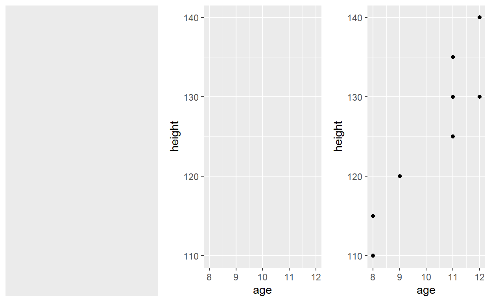
Note that when you added the geom layer you used the addition (+) operator. As you add new layers you will always use + to add onto your visualization.
The aesthetic mappings take properties of the data and use them to influence visual characteristics, such as position, color, size, shape, or transparency. Each visual characteristic can thus encode an aspect of the data and be used to convey information.
All aesthetics for a plot are specified in the aes() function call (later in this tutorial you will see that each geom layer can have its own aes specification). For example, we can add a mapping the sex of the kid to a color characteristic:
ggplot(data = kids_frame, aes(x = age, y = height, color = sex)) +
geom_point()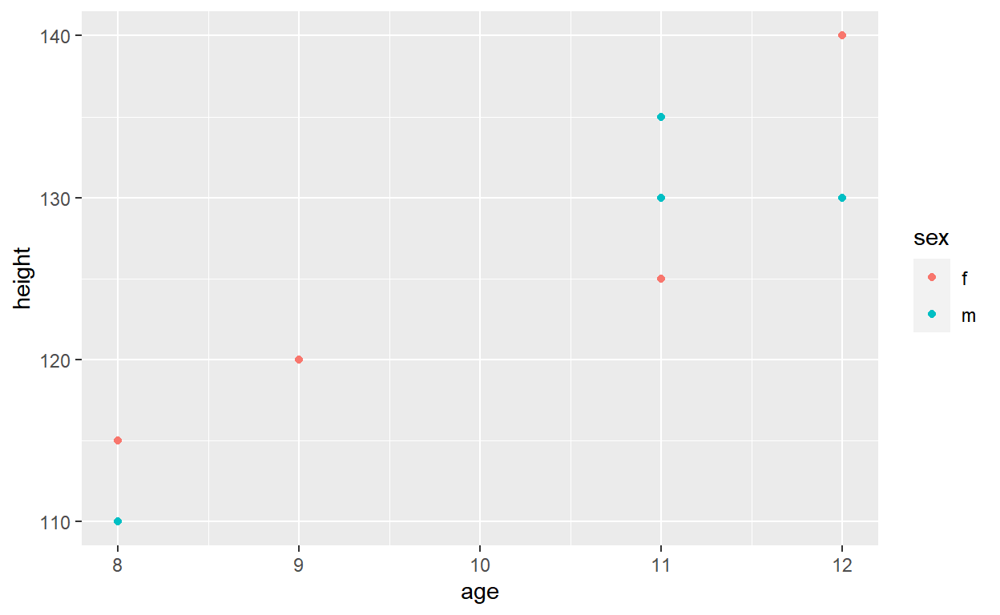
Note that using the aes() function will cause the visual channel to be based on the data specified in the argument. For instance, if you want all your points to be green you need to specify it outside the aesthetics:
ggplot(data = kids_frame, aes(x = age, y = height)) +
geom_point(color = "green")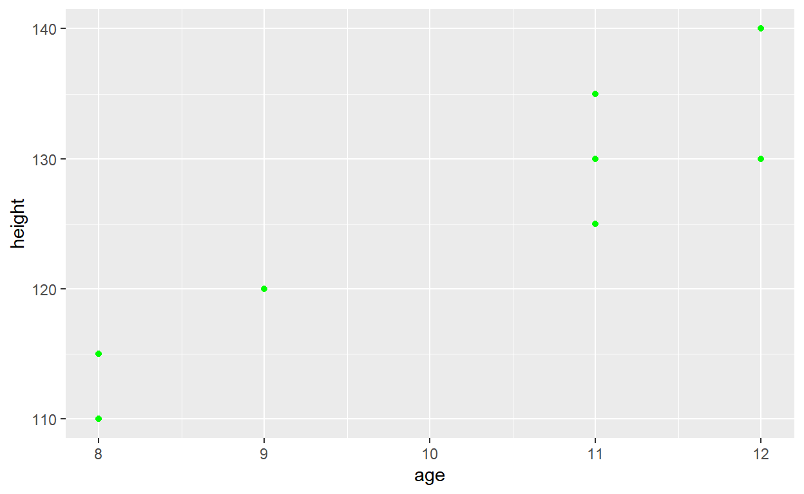
Building on these basics, ggplot2 can be used to build almost any kind of plot you may want. These plots are declared using functions that follow from the Grammar of Graphics.
The most obvious distinction between plots is what geometric objects (geoms) they include. ggplot2 supports a number of different types of geoms. The most important geoms are:
geom_point for drawing individual points (e.g., a scatter plot)geom_line for drawing lines (e.g., for a line charts)geom_smooth for drawing smoothed lines (e.g., for simple trends or approximations)geom_bar for drawing bars (e.g., for bar charts)geom_histogram for drawing binned values (e.g. a histogram)geom_boxplot for drawing a boxplotNote that geom_bar and geom_histogram do not require the mapping of a y:
ggplot(data = kids_frame, aes(x = age, y = height)) +
geom_point()
ggplot(data = kids_frame, aes(x = age, y = height)) +
geom_line()
ggplot(data = kids_frame, aes(x = height)) +
geom_histogram()
ggplot(data = kids_frame, aes(x = sex, y = height)) +
geom_boxplot()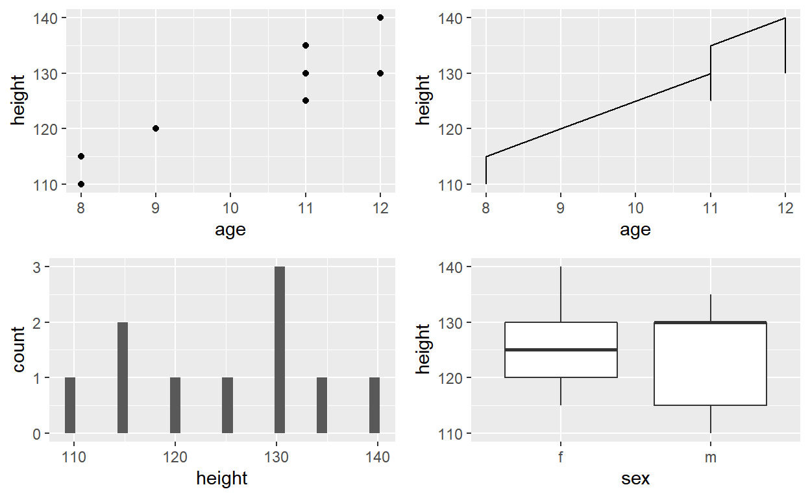
But what makes ggplot and the Grammar of Graphics really powerful is that you can add multiple geometries to a plot, thus allowing you to create complex graphics showing multiple aspects of your data.
For instance, if I want to vizualise more clearly the trend between age and height I can add a geom_smooth:
ggplot(data = kids_frame, aes(x = age, y = height)) +
geom_point() +
geom_smooth()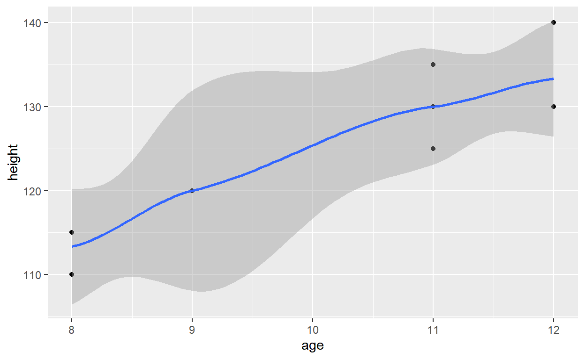
In addition to a default statistical transformation, each geom also has a default position adjustment which specifies a set of “rules” as to how different components should be positioned relative to each other. This position is noticeable in a geom_bar if you map a different variable to the color visual characteristic:
ggplot(data = kids_frame, aes(x = sex, fill = shoe_color)) +
geom_bar()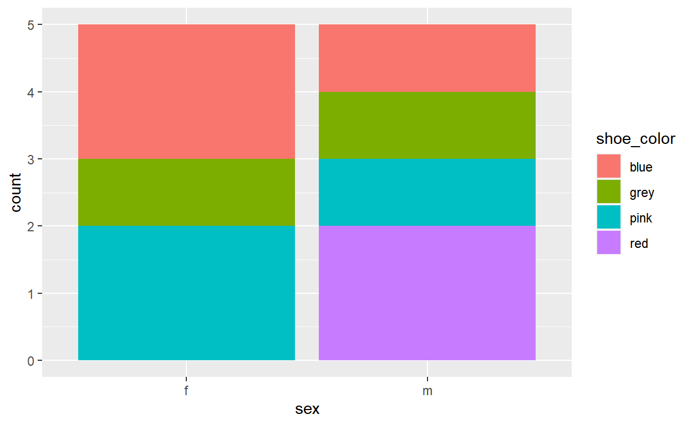
The geom_bar by default uses a position adjustment of “stack”, which makes each rectangle’s height proportional to its value and stacks them on top of each other. We can use the position argument to specify what position adjustment rules to follow:
ggplot(data = kids_frame, aes(x = sex, fill = shoe_color)) +
geom_bar(position = "dodge")
ggplot(data = kids_frame, aes(x = sex, fill = shoe_color)) +
geom_bar(position = "fill")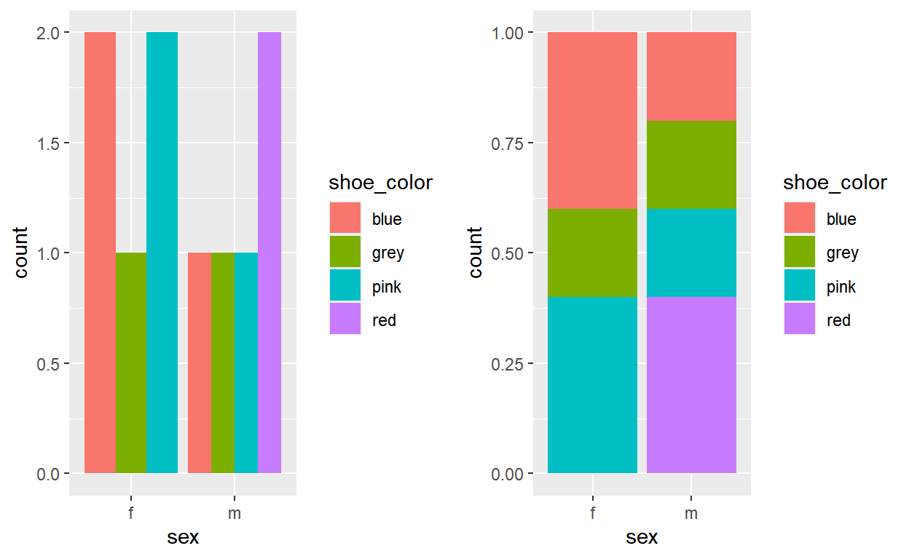
Check the documentation for each particular geom to learn more about its positioning adjustments.
Whenever you specify an aesthetic mapping, ggplot uses a particular scale to determine the range of values that the data should map to.
While the default scales will work fine, it is possible to explicitly add different scales to replace the defaults. This is especially useful for the colors. While you can use the default coloring, a more common option is to leverage the pre-defined palettes from colorbrewer.org. Here is an overview of the palette and their names.
These color sets have been carefully designed to look good and to be viewable to people with certain forms of color blindness. We can change the colors by specifying a palette argument in the scale_color_brewer().
ggplot(data = kids_frame, aes(x = age, y = height, color = names)) +
geom_point(size = 3)
ggplot(data = kids_frame, aes(x = age, y = height, color = names)) +
geom_point(size = 3) +
scale_color_brewer(palette = "Set3")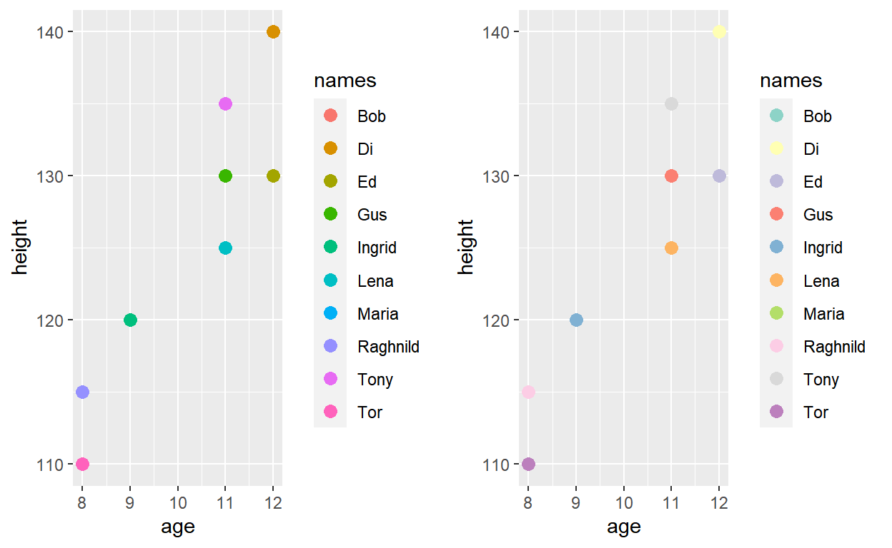
Facets are ways of grouping a data plot into multiple different pieces (subplots). This allows you to view a separate plot for each value in a categorical variable. This is very useful when you want to evaluate the patterns in different categories in your data. You can construct a plot with multiple facets by using the facet_wrap() function. This will produce a “row” of subplots, one for each categorical variable (the number of rows can be specified with an additional argument):
ggplot(data = kids_frame, aes(x = age, y = height, color = names)) +
geom_point(size = 3) +
facet_wrap( ~ sex)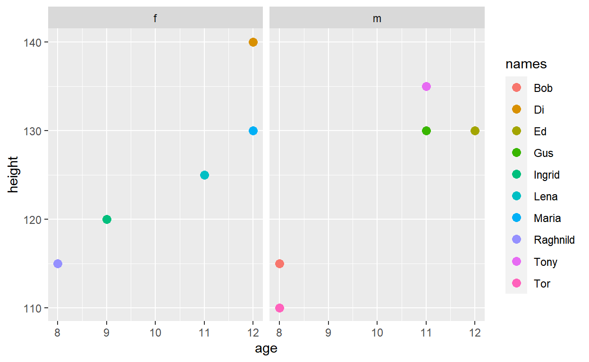
Textual labels and annotations (on the plot, axes, geometry, and legend) are an important part of making a plot understandable and communicating information. It is very easy to add such annotations in ggplot:
ggplot(data = kids_frame, aes(x = age, y = height, color = names)) +
geom_point(size = 3) +
labs(title = "Height of the kids function of their age",
subtitle = "The dataset was simulated",
x = "Age of the kids",
y = "Height of the kids",
color = "Names")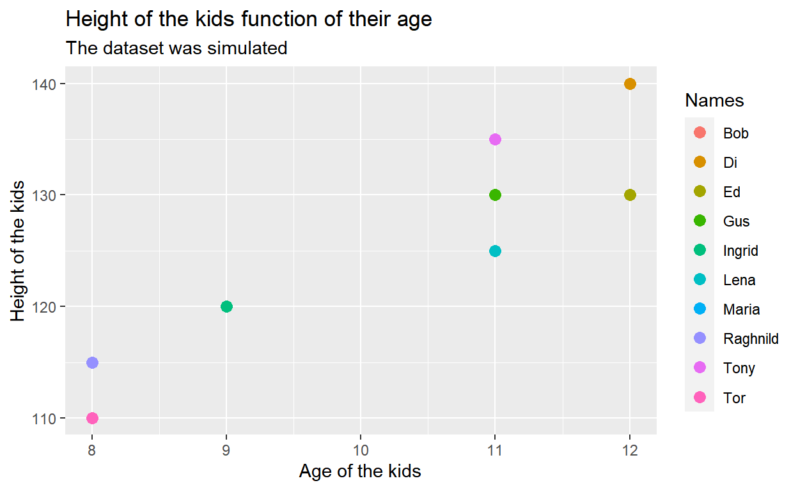
ggplot2This lab will get you started with ggplot2. However, this library has much more to offer. If you want to take it further I recommend reading the part I of R for Data Science.
Here is also a cheat sheet so you remember easily the basic functions of ggplot2.
Now it is your turn to practice. You will play with the plastic_waste dataset that you can download here:
Note that this is a .csv file, to open it you will need to use the function read.csv():
plastic_waste <- read.csv('C:/Users/benjamcr/Rproj/GEOG3006/data/plastic_waste.csv')The variable descriptions are as follows:
Question 1: Visualize the relationship between plastic waste per capita and mismanaged plastic waste per capita using a scatterplot. Describe the relationship.
Question 2: Color the points in the scatterplot by continent. Does there seem to be any clear distinctions between continents with respect to how plastic waste per capita and mismanaged plastic waste per capita are associated?
Question 3: Visualize the relationship between plastic waste per capita and total population as well as plastic waste per capita and coastal population. Do either of these pairs of variables appear to be more strongly linearly associated?
Question 4: Recreate the following plot and think about what is wrong about it, how could you make it better?
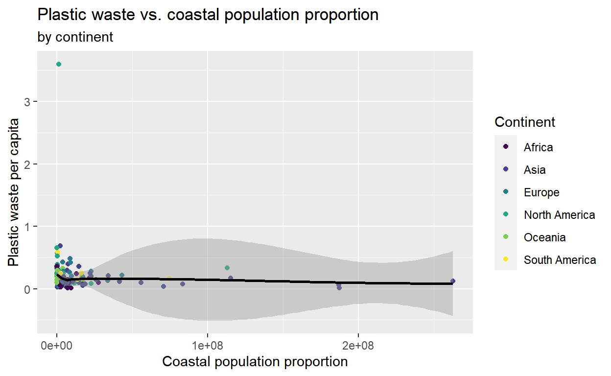
Note that I am using the function scale_color_viridis() from the library viridis.
In next lab we will correct the questions and train more our data vizualisation skills!
Good luck! 💪 💪 💪